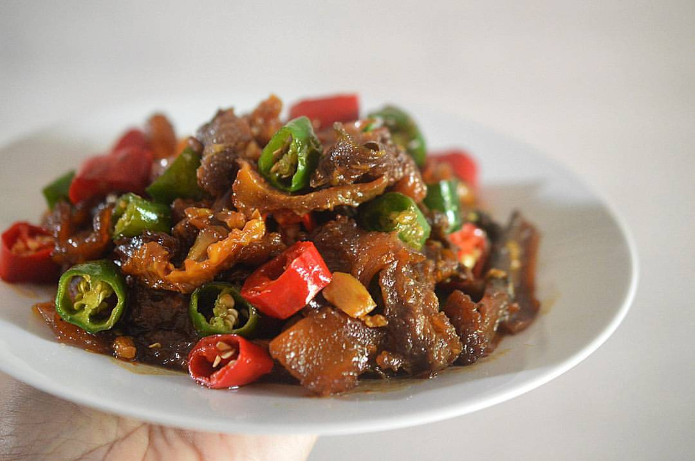

Oseng Kikil
Lauk yang pedas manis ini paling pas dimakan dengan nasi hangat. Kikil sapi yang lembut sedikit kenyal dibumbui kecap dan cabai. Rasanya pedas manis enak!
Bahan
- 500 g kikil sapi yang sudah bersih dan empuk
- 4 sdm minyak
- 7 butir bawang merah, iris tipis
- 5 siung bawang putih, iris tipis
- 3 buah cabe merah, iris serong tipis
- 3 buah cabe hijau, iris serong tipis
- 10 buah cabe rawit merah, buang tangkainya
- 2 lembar daun salam
- 1 cm lengkuas, memarkan
- 5 sendok kecap manis ABC
- 3 sdm air asam Jawa
- 100 ml air
- 1/2 sdt merica bubuk
- 1 sdt garam
Cara Membuat
- Potong-potong kikil sapi ukuran 2x2 cm.
- Panaskan minyak, tumis bawang merah dan bawang putih hingga harum dan layu.
- Tambahkan irisan cabe merah dan hijau serta cabe rawit, aduk hingga layu.
- Masukkan daun salam dan lengkuas.
- Masukkan potongan kikil, aduk rata
- Tambakan kecap manis ABC, air asam Jawa dan air, didihkan.
- Bumbui dengan merica dan garam lalu masak hingga air hampir habis.
- Aduk rata lalu angkat.
|